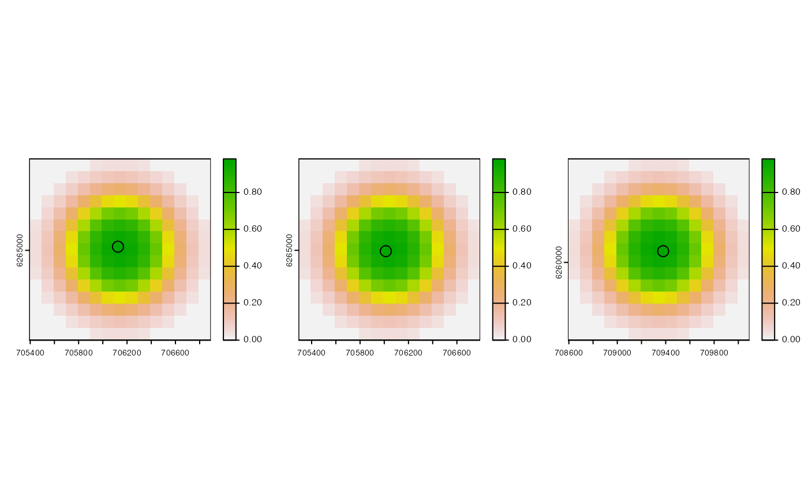
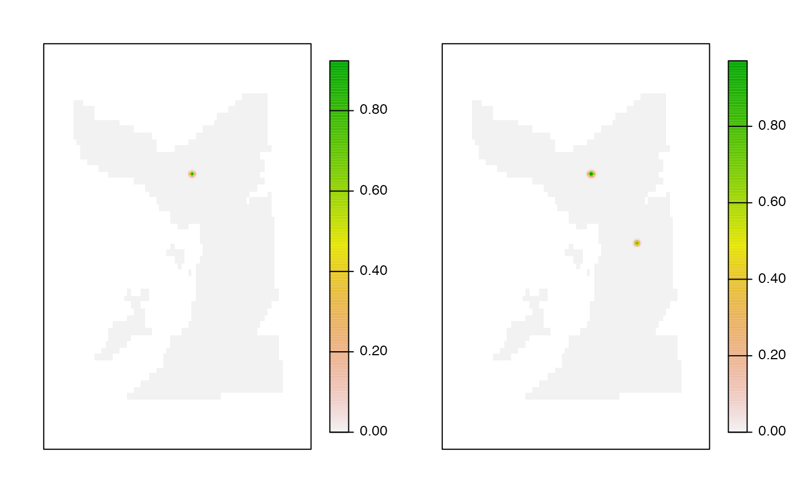

This function defines the detection kernels for the AC* algorithms.
acs_setup_detection_kernels(
.dlist,
.calc_detection_pr = acs_setup_detection_pr,
.verbose = getOption("patter.verbose"),
...
)Source
This function is based on the acs_setup_detection_kernels function in the flapper package, where the role of detection kernels in the AC* algorithms is described extensively (see Details).
Arguments
- .dlist
A named
listof data and parameters frompat_setup_data(). This function requires:.dlist$data$moorings, with the following columns:receiver_id,receiver_start,receiver_end,receiver_xandreceiver_y, plus any columns used internally by.calc_detection_pr(see below)..dlist$data$services, with the following columns:receiver_id,service_startandservice_end(seemake_matrix_receivers())..dlist$spatial$bathy, which defines the grid over which detection kernels are defined.
- .calc_detection_pr, ...
A function that defines a receiver-specific detection kernel (see
acs_setup_detection_pr()for an example). This must accept three arguments (even if they are ignored):.mooring---A one-rowdata.tablethat contains the information in.mooringsfor a specific receiver;.bathy---ASpatRasterthat defines the grid over which detection probability is calculated (see below);...Additional arguments passed viaacs_setup_detection_kernels(). Using these inputs, the function must return aSpatRasterthat defines the detection kernel around a specific receiver (see Examples).
- .verbose
Argument(s) to monitor function progress (see
patter-progress).
Value
The function returns a named list, with the following elements:
receiver_specific_kernels. Alist, with one element for all integers from 1 to the maximum receiver number. Any elements that do not correspond to receivers contain aNULLelement. List elements that correspond to receivers contain aSpatRasterof the detection probability kernel around the relevant receiver. Cells values define the detection probability around a receiver, given.calc_detection_prIn the AC* algorithm(s), these kernels are used to up-weight location probabilities near to a receiver when it is detected (following modification to account for overlapping areas, if necessary).receiver_specific_inv_kernels. Alist, as forreceiver_specific_kernels, but in which elements contain the inverse detection probability kernels (i.e., 1 - detection probability). In the AC* algorithm(s), these is used to down-weight-weight location probabilities in the overlapping regions between a receiver that recorded detections and others that did not at the same time.array_design. Adata.framethat defines the number and deployment times of each unique array design, resulting from receiver deployment, servicing and removal. In the times between detections, this is used to select the appropriate 'background' detection probability surface (see below). This contains the following columns:array_id. An integer vector that defines each unique array design.array_start_date. A Date that defines the start date of each array design.array_end_date. A Date that defines the end date of each array design.array_interval. Alubridate::Intervalvector that defines the deployment period of each array design.
array_design_by_date. A namedlistthat defines, for each date (list element), the array design on that date (based onarray_idinarray_design).bkg_surface_by_design. Alist, with one element for each array design, that defines the detection probability surface across all receivers deployed in that phase of the study. In areas that are covered by the detection probability kernel of a single receiver, the detection probability depends only on distance to that receiver (via.calc_detection_pr). In areas covered by multiple, overlapping kernels, detection probability represents the combined detection probability across all overlapping kernels (see Details).bkg_inv_surface_by_design. Alist, as above forbkg_surface_by_design, but which contains the inverse detection probability surface (i.e., 1 -bkg_surface_by_design). In the AC* algorithm(s), this is used to up-weight areas away from receivers (or, equivalently, down-weight areas near to receivers) in the time steps between detections.
Details
This function permits receiver-specific detection kernels.
See also
To implement an AC*PF algorithm, use:
acs_setup_obs()to set up observations;acs_setup_detection_overlaps()to identify receiver overlaps (used in detection probability calculations);acs_setup_detection_kernels()andacs_setup_detection_pr()to define detection probability kernels;pf_forward()to run the simulation;
Examples
require(graphics)
require(data.table)
#> Loading required package: data.table
#### Define function inputs
# Define example 'moorings' dataset
# * Receivers 3 and 4 overlap in space but receiver 5 is further afield
m <- data.table(receiver_id = c(3, 4, 5),
receiver_start = as.Date(c("2016-01-01", "2016-01-01", "2016-01-01")),
receiver_end = as.Date(c("2016-01-05", "2016-01-05", "2016-01-05")),
receiver_easting = c(706124.9, 706012.7, 709379.0),
receiver_northing = c(6265030, 6264993, 6260093),
receiver_range = 750)
# Define example 'services' dataset
s <- data.table(receiver_id = c(3, 5),
service_start = as.Date(c("2016-01-01", "2016-01-01")),
service_end = as.Date(c("2016-01-01", "2016-01-01")))
# Set up data as usual
dlist <- pat_setup_data(.moorings = m,
.services = s,
.bathy = dat_gebco(),
.lonlat = FALSE)
#> `.moorings` coordinates coerced onto `.bathy` grid.
#### Example (1): Implement function using specified inputs
# Implement function
k <- acs_setup_detection_kernels(dlist, .calc_detection_pr = acs_setup_detection_pr)
#> `patter::acs_setup_detection_kernels()` called @ 2023-12-19 14:01:07...
#> ... Getting receiver-specific kernels (for detection)...
#> ... Getting receiver-specific inverse kernels...
#> ... Getting area-wide kernels (for non-detection)...
#> ... ... Get unique array designs...
#> ... ... Get area wide kernels for each array design...
#>
#> ... ... ... For design 1/2...
#> ... ... ... ... Extract detection probability kernels for active receivers...
#> ... ... ... ... Combining detection kernels to calculate the background detection probability surfaces (this is a slow step)...
#>
#> ... ... ... For design 2/2...
#> ... ... ... ... Extract detection probability kernels for active receivers...
#> ... ... ... ... Combining detection kernels to calculate the background detection probability surfaces (this is a slow step)...
#> ... Process detection probability kernels ...
#> ... patter::acs_setup_detection_kernels() call completed (@ 2023-12-19 14:01:07.910886) after ~0 minutes.
#> `patter::acs_setup_detection_kernels()` call ended @ 2023-12-19 14:01:07 (duration: ~0 sec(s)).
# Examine list elements
summary(k)
#> Length Class Mode
#> receiver_specific_kernels 5 -none- list
#> receiver_specific_inv_kernels 5 -none- list
#> array_design 4 data.frame list
#> array_design_by_date 5 -none- list
#> bkg_surface_by_design 2 -none- list
#> bkg_inv_surface_by_design 2 -none- list
# Examine example receiver-specific kernels
pp <- par(mfrow = c(1, 2))
lapply(c(3, 4), \(id) {
terra::plot(k$receiver_specific_kernels[[id]])
points(m[m$receiver_id == id, .(receiver_easting, receiver_northing)], cex = 2)
}) |> invisible()
par(pp)
# Examine example receiver-specific inverse kernels
pp <- par(mfrow = c(1, 2))
lapply(c(3, 4), \(id) {
terra::plot(k$receiver_specific_kernels[[id]])
points(m[m$receiver_id == id, .(receiver_easting, receiver_northing)], cex = 2)
}) |> invisible()

par(pp)
# Examine background detection Pr surfaces
# (for each unique combination of receivers that were deployed)
pp <- par(mfrow = c(1, 2))
lapply(k$bkg_surface_by_design, \(bkg) {
terra::plot(bkg, axes = FALSE)
box()
}) |> invisible()

par(pp)
# Examine background inverse detection Pr surfaces
pp <- par(mfrow = c(1, 2))
lapply(k$bkg_inv_surface_by_design, \(bkg) {
terra::plot(bkg, axes = FALSE)
box()
}) |> invisible()
 par(pp)
par(pp)